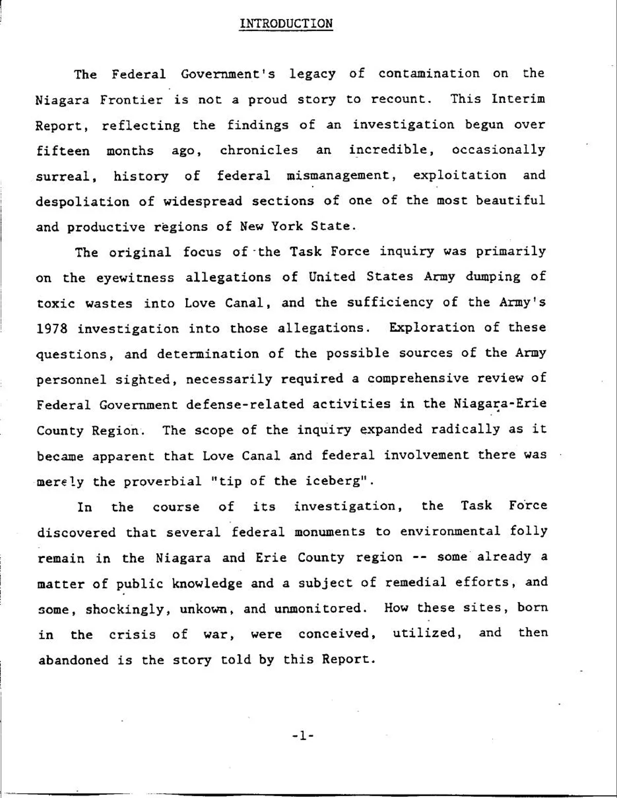

Adams Power Station

Inside Adams Power Station

Linde
Union Carbide division
North Tonawanda, Niagara County, NY

Electromet
Union Carbide division
Niagara Falls, NY

Hooker
Electrochemical Company
Niagara Falls, NY

Carborundum
Niagara Falls, NY

Atomic Niagara

 Leslie R. Groves · Director of the Manhattan Project
Leslie R. Groves · Director of the Manhattan Project
 Uranium tetrafluoride · “green salt” · U.S. Department of Energy
03
Uranium tetrafluoride · “green salt” · U.S. Department of Energy
03
Uranium recovery
Uranium turnings and scrap were cleaned, pressed into briquettes, and remelted.
 Uranium metal rods · final product
Uranium metal rods · final product
 Uranium ore · Shinkolobwe, Belgian Congo · collected 1965
Uranium ore · Shinkolobwe, Belgian Congo · collected 1965
 From green salt to uranium metal
From green salt to uranium metal
Driven by the urgency of World War II and the atomic bomb project, this region became the number one center for processing and refining a significant portion of the uranium needed for the bomb. Besides refining and processing uranium ore, many factories were equipped with their own laboratories. Scientists at these laboratories investigated methods for maximizing uranium yield, such as extracting it from leftover materials. General Leslie Groves, who was overseeing the Manhattan Project at the time, was well aware of this advantage. Groves personally fostered close ties with numerous factory owners in the region, valuing their commitment to confidentiality and the protection of sensitive information. This commitment to “secrecy” exposed thousands of workers to radioactive materials, a practice the army maintained throughout the Cold War.
The process
-
Before the Manhattan Project, Linde’s ceramics business used uranium compounds to produce black, yellow, green, and brown salts for coloring ceramic glazes. This is the origin of the name Linde Ceramics. That chemical experience is also why the Army selected Linde for large-scale uranium separation.
Linde Air Products was a division of Union Carbide and Carbon Corporation. During the war, its Tonawanda plant processed high-grade uranium ore—much of it mined in the Belgian Congo—through three stages: ore into black uranium oxide (U3O8), black oxide into brown uranium oxide (UO2), and brown oxide into uranium tetrafluoride (UF4). The final product was the green, salt-like powder known as “green salt,” which was shipped by train to Electromet in Niagara Falls.
-
Electro Metallurgical Company, known as Electromet, was another Union Carbide company. Before uranium, its electric furnaces produced calcium carbide, ferroalloys, tungsten, titanium, and other specialty metals. This high-temperature metallurgical expertise made Electromet suited to convert green salt into uranium metal.
Workers mixed uranium tetrafluoride with magnesium inside a dolomite-lined steel vessel known as a “bomb.” When heated, the mixture underwent a violent thermite reaction. The uranium separated, pooled at the bottom, and was cast into 110–135-kilogram ingots, then recast into billets. The process left uranium-bearing C-1 and C-2 slag.
-
Before its uranium work, Hooker used Niagara’s cheap hydroelectric power to electrolyze salt into chlorine, caustic soda, and hydrogen. Its products included bleach, water-treatment chemicals, solvents, and other industrial compounds.
Under its Manhattan Engineer District contract, Hooker also manufactured fluorinated and chlorinated organic chemicals. One product, xylene hexafluoride, was known by the wartime code P-45. Although P-45 itself was not radioactive, its production generated waste hydrochloric acid.
Hooker used this acid in a separate uranium-recovery operation, treating C-2 slag delivered from Electromet’s uranium-metal reduction vessels. The slag consisted largely of magnesium-fluoride residue and spent dolomite liners—materials that still retained recoverable uranium. Workers opened and screened the barrels, separated uranium-rich pieces, conveyed the remaining material to digest tanks, treated it with acid, neutralized it with lime, filtered and washed the slurry, and rebarreled the concentrate. The process increased the uranium concentration from roughly 0.2 percent in the incoming material to approximately 1–2 percent in the resulting concentrate.
The recovered uranium concentrate was shipped by rail back to Linde in Tonawanda, where it reentered the production cycle—refined again into green salt and returned to Electromet for conversion into uranium metal. The process then began again.
-
Bethlehem Steel in Lackawanna and Simonds Saw and Steel in Lockport—the plant later known as Guterl Specialty Steel—formed the rolling and finishing stage of the regional uranium chain. Simonds became the program’s principal rod manufacturer, rolling uranium metal billets into long rods from 1948 through 1956. Bethlehem finish-rolled some bars rough-rolled at Simonds, heat-treated and ground uranium rods, and helped develop continuous-rolling methods later used at Fernald.
The finished rods were shipped to Hanford in Washington State, where they were cut and machined into short fuel slugs, canned, loaded into production reactors, and irradiated to produce plutonium for nuclear weapons.
-
In 1943, DuPont sent Carborundum ten unfinished uranium slugs—about thirty pounds of metal—to determine which abrasive wheels and grinding speeds should be used to finish reactor fuel. These centerless-grinding experiments supported the production of uranium slugs for the Clinton and Hanford reactors. The surviving records do not establish whether this work occurred at the Buffalo Avenue site or the Globar Plant.
Carborundum’s nuclear work expanded dramatically from 1959 through 1967 at its Central Research Laboratory on Buffalo Avenue. There, researchers developed uranium nitride, uranium carbide, and uranium silicide as possible alternatives to uranium dioxide and devised methods for synthesizing, forming, and testing these materials as reactor fuels.
Beginning in 1960, plutonium shipped from Hanford arrived at Carborundum for the AEC’s Carbide Fuel Development Program. Inside a classified fourth-floor laboratory, workers mixed uranium and plutonium compounds, heated them in furnaces, pressed and sintered the material, and ground it into experimental uranium–plutonium carbide fuel pellets. The program investigated fuels capable of longer burnups and higher power in advanced reactors.
-
At the same time, Bell Aerospace was developing the RASCAL, the United States Air Force’s first nuclear-armed standoff missile—an air-to-surface, supersonic guided missile designed to deliver a nuclear warhead.
Bell and the Atomic Energy Commission operated a test center north of Balmer Road on the former Lake Ontario Ordnance Works (LOOW), a 7,567-acre federal site in Lewiston and Porter originally built during World War II to manufacture TNT. The facility became known as the Bell Test Center.
In 1967, the site was temporarily used to house the Lewiston-Porter School while a new school building was under construction and scheduled for completion in 1970. During that time, 275 students, along with their teachers and administrative staff, attended classes at the site.
-
The Lake Ontario Ordnance Works was a vast U.S. Army reservation constructed during World War II to manufacture TNT. After explosives production ended, the Manhattan Engineer District repurposed part of the site as its official regional repository for radioactive waste from Western New York’s uranium program. Beginning in 1944, residues and contaminated materials were brought there for storage, repackaging, burial, and disposal. Not all of the region’s waste reached LOOW; much of what did was concealed by secrecy, buried, and ultimately forgotten.
Radioactive waste

Radioactive waste is not a separate story from uranium production. It is what the process left behind—and in Western New York, it moved far beyond the places where it was made.
Liquid waste entered industrial disposal systems. Solid residues became slag, gravel, road bedding, and fill. Some material went to the federal reservation at the Lake Ontario Ordnance Works; some was buried at industrial dumps; some travelled with contractors and government trucks into parking lots, streets, driveways, and yards. Decades later, each excavation can expose another part of that geography.

The canal was only the beginning.
Love Canal was not a working canal. It was the unfinished remains of a nineteenth-century project intended to generate hydroelectric power for a planned industrial city. By the 1920s, the abandoned trench had become a municipal and industrial dumping ground. Hooker Chemical later used the property to dispose of chemical waste. In 1953, the company covered the canal with soil and sold the land to the city for one dollar. A school and hundreds of homes were eventually built around it.
By the 1970s, buried chemical drums were corroding and their contents were rising through the soil into yards, basements, sewers, and school grounds. Residents reported foul odors, chemical burns, illnesses, miscarriages, and birth defects. Their organizing and public pressure forced government agencies to investigate. In August 1978, New York declared a public-health emergency, and families began to be evacuated.
But the investigation began to reveal that Love Canal was not solely the story of Hooker Chemical. Residents and former workers alleged that the United States Army and military contractors had also dumped waste there during and after World War II. On June 1, 1979, New York State Assembly Speaker Stanley Fink created the Task Force on Toxic Substances to investigate those allegations, determine who had used the canal, and identify what had been buried there.
Investigators collected military contracts, disposal records, contamination surveys, and testimony from residents, workers, military personnel, and industry representatives. Their preliminary findings showed that the federal government had directed extensive wartime and postwar chemical production across the Niagara–Erie region, that wastes from those programs had been improperly disposed of, and that federal properties had been transferred without adequate decontamination.
What began as an investigation of one contaminated neighborhood opened onto a much larger history—one involving the Manhattan Project, Niagara’s uranium-processing factories, the Lake Ontario Ordnance Works, and the movement of radioactive waste across an entire region.
Investigators entered Love Canal looking for one history of disposal. What they uncovered was an entire regional system of wartime production—and the movement, reuse, and disposal of what it left behind.
The Federal Connection
The task force’s final report connected Love Canal to a broader federal and industrial system. It centered on the former Lake Ontario Ordnance Works and the Manhattan Project uranium network linking Linde, Electromet, Hooker, military agencies, contractors, rail lines, disposal wells, and storage areas.
The report concluded that government-related chemical production contributed to the region’s contamination, that the Army’s earlier inquiry had not adequately examined federal involvement, and that Manhattan Project operations had disposed of 37 million gallons of radioactively contaminated chemical waste in underground wells that were not adequately identified or monitored.
The Federal Connection

Before containment
U.S. Army Corps of Engineers footage records the silo and facilities at the former LOOW as they remained in 1985. The images were made before construction of the interim waste containment structure in 1986.
The Union Carbide trail
Two reports prepared in 1979 by a private investigator for the owner of the Pine Bowl parking lot recorded interviews with contractors about where industrial slag went. The May 10 report said contractors described Friona Trucking hauling waste and slag from Union Carbide’s Niagara Falls property to the company dump, then known as Newco. It also recorded that untreated slag was sold or used as inexpensive fill.
The report was a lead, not a final attribution. Its own last lines state that the interviewee did not know whether Union Carbide slag had actually been used at Pine Bowl. Decades later, reporter Dan Telvock brought these records back into public view and showed how much of the disposal chain remained unresolved.

Telvock also reported that in 1965 New York granted Union Carbide an exemption to bury radioactive waste on company property later incorporated into the closed CECOS landfill at 5600 Niagara Falls Boulevard. The costly alternative was to ship the material to an out-of-state facility authorized to accept it.
Upper Mountain Road
An Oak Ridge National Laboratory mobile gamma scan conducted October 3–16, 1984 identified 100 radiation anomalies across the Niagara Falls area. Field teams returned July 15–17, 1985 for onsite measurements intended to determine which anomalies might be connected to the movement of radioactive waste to LOOW.
The survey listed separate anomalies at 789 and 738 Upper Mountain Road. At 738, investigators measured the survey’s highest recorded surface gamma exposure rate in the Lewiston group: 710 microroentgens per hour along a ditch and gravel driveway. The report also found elevated uranium and thorium in a biased soil sample there. At 789, the report recorded another thorium-bearing slag anomaly.
The 1985 table distinguishes anomaly 42 at 789 Upper Mountain Road from anomaly 43 at 738. Later reporting and EPA work focused particularly on the driveway adjoining 738.
Dan Telvock’s 2016 investigation returned public attention to the driveway and to dozens of other properties left outside the earlier federal cleanup. EPA later removed contaminated material from portions of the Upper Mountain Road driveway and culvert in 2020, followed by work at adjacent residential properties between 2021 and 2023.

The 1985 survey was one of many
No single survey defines the extent of Niagara’s radioactive fill. Agencies repeatedly returned with different instruments, boundaries, cleanup criteria, and questions. Some surveys looked for material associated with transport to LOOW; others examined commercial slag, individual properties, construction debris, or the wider region.
Federal aerial and follow-up work identified radiological anomalies at residential, commercial, and roadside locations.
An ORNL vehicle survey scanned selected roads and identified 100 elevated gamma anomalies for follow-up.
Onsite measurements and soil sampling separated 38 FUSRAP-related anomalies from 62 associated principally with industrial slag.
State agencies resurveyed locations including Niagara Falls Boulevard and referred priority properties to EPA.
EPA assessment and removal work reached parking lots, driveways, homes, a cemetery vicinity, and a children’s facility.
DEC and EPA began new aerial, vehicle-based, and ground-level regional surveys to update the earlier record.
Every excavation can reopen the archive
This buried history changes how the region builds. When the city repairs streets or utilities, undertakes construction, or prepares a former industrial property for brownfield redevelopment, the environmental investigation must include radiological conditions. What once looked like ordinary gravel can become an exposure, handling, transport, and disposal problem as soon as it is disturbed.
The American Falls Bridges project makes the requirement visible. Its environmental screening noted that TENORM slag had been widely used in Niagara Falls roadway and driveway projects, found slag in earlier test pits, and recommended a full radiological survey across the project’s areas of potential impact. At Donovan Head Start, low-level radiological material discovered in construction waste and soil debris triggered state referral and an EPA assessment.
Two industrial districts. Multiple possible sources.
Within Niagara Falls, this legacy repeatedly surfaces in the city’s two principal former-industrial redevelopment areas: the Buffalo Avenue corridor and the Highland Avenue corridor. These districts are part of a larger production landscape that also extended through Tonawanda, Lackawanna, Lockport, Lewiston, and Porter.
Buffalo Avenue corridor
A riverfront manufacturing and infrastructure corridor where industrial sites, imported fill, roads, and later redevelopment overlap.
Highland Avenue corridor
A second major former-industrial and brownfield planning area, distinct from the Buffalo Avenue corridor and embedded beside residential neighborhoods.
A radioactive reading does not, by itself, identify the company that produced the material. The Oak Ridge report attributed many of the 62 non-NFSS anomalies to phosphate-production slag and pointed to the former Oldbury Furnace, while leaving the origin of some thorium-bearing material unresolved. The 1979 investigator’s records named Union Carbide, Oldbury, Pittsburgh Metallurgical, and contractors as possible parts of the wider disposal history.
Because several factories generated slag, furnace waste, and other radiological residues—and because those materials were sold, hauled, mixed, and reused—the waste at a later property could have come from more than one industrial source. Attribution requires both radiological analysis and a documented chain of movement.
The factories were regional. The waste became regional. Every new survey adds another page to an unfinished record.
The material moved through a chain of specialized facilities. Linde in Tonawanda refined uranium ore into uranium compounds including uranium tetrafluoride, the green powder commonly called “green salt.” Electromet in Niagara Falls converted that material into uranium metal, producing radioactive C-2 slag as a byproduct. Hooker Chemical treated slag to recover uranium that remained in the waste.
Other facilities carried the process forward. Regional steel plants rolled and fabricated uranium components, while Carborundum participated in uranium-related research and later nuclear-fuel development. Bell Aerospace’s weapons work overlapped geographically with this expanding network of nuclear-material research.
This is why the project does not treat a single factory or dump as the whole story. Each process created a different waste stream, and those waste streams moved through shared rail lines, trucking routes, sewers, waterways, storage areas, landfills, and neighborhoods.
In 1979, Oak Ridge National Laboratory conducted an aerial radiological survey of Niagara County and identified numerous areas of elevated radiation. A later mobile survey in the mid-1980s investigated locations across Niagara Falls and documented more than one hundred elevated gamma-radiation locations.
The limits of those surveys became clearer over time. New radiological findings continued to appear during road work, construction, and site investigations, including locations near the Robert Moses Parkway, the Whirlpool Bridge area, Niagara Falls State Park, and properties on Main Street.
The pattern raised a central question that drives this project: if radioactive industrial material was repeatedly moved and reused as fill, how much of the city was never comprehensively surveyed?


By the 1970s, the federal government had begun identifying former Manhattan Project and Atomic Energy Commission sites that required radiological investigation and cleanup. That work became the Formerly Utilized Sites Remedial Action Program, or FUSRAP. Western New York contains an unusually dense concentration of sites connected to this history.
At almost the same moment, Love Canal forced the country to confront what industrial disposal could mean for a residential community. Residents organized around illnesses, miscarriages, birth defects, and chemicals surfacing around homes and a school built beside a former industrial dump. Their campaign helped propel the creation of the federal Superfund program.

After Love Canal, the New York State Assembly created a special task force to investigate claims that military and federal activities were connected to waste disposal in Niagara Falls. The resulting 293-page report, The Federal Connection, documented relationships among the U.S. Army, the Manhattan Engineer District, federal contractors, and the region’s chemical and metallurgical industries.
Love Canal and federal involvement were merely the proverbial tip of the iceberg.
The Federal Connection Report, page 20
Greetings from Niagara builds on that investigation with records that were unavailable or difficult to access when the state report was produced: worker-dose reconstruction files, FUSRAP records, environmental investigations, archival footage, historical surveys, court and legislative records, and hundreds of government documents scattered across multiple agencies.
The project follows those fragments across factories, roads, waterways, homes, public spaces, and the people who have lived with the consequences. It is an attempt to reconstruct a regional history that was divided among agencies and hidden behind industrial and military secrecy.

What follows is the unraveling of a national story with consequences that remain embedded in the landscape of Western New York.